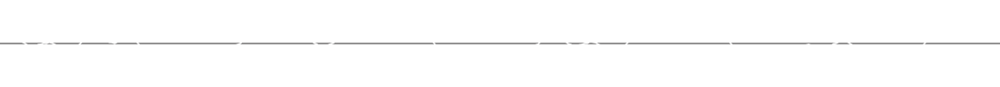
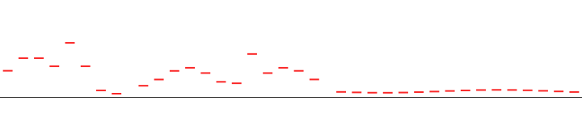
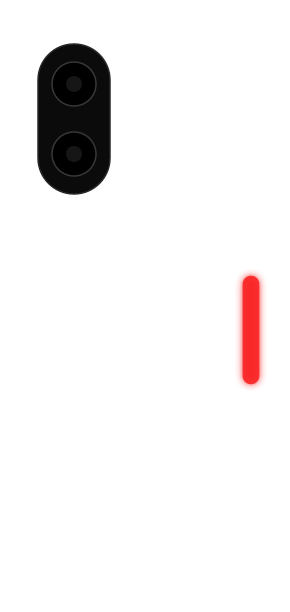

BNMV turns the Glyph Interface on Nothing Phones into a true spectrum analyser. Every segment follows its own slice of the song, so the kick, the vocal and the hi-hat each get their own light.
The stock visualizer steps through about three brightness levels, twenty times a second. BNMV moves each segment through 4,096 levels at 60 frames a second. Here is one signal through both.


A single frame of the demo signal. White bars are the smoothed zone levels and red ticks are the raw peaks, so light rises at once and falls gently. The row underneath is what the 36 lights do.
It hears what you hear. Audio comes from any app through Android's screen capture, from the microphone, or from another device on your network.
Each 16.666 ms frame gets its own FFT across a 20 ms window. The spectrum decides the light, not a guess.
Every light owns a frequency band. Its brightness is the loudest peak inside that band.
Light rises at once and falls gently. Smoothing only works on the way down, so hits stay sharp and flicker fades out.
Same song, same settings, same light. Every time.
The bands live in zones.config, a plain JSON file with one line per light. Retune a band, change the fade with decay-alpha, or map a phone nobody has added yet.
Read the zones.config guideThe lights are the headline, not the whole show. Most of BNMV runs on any Android phone.
Feel the low end in your hand. The vibration motor follows the bass or fires on detected beats.
The torch runs on the same beat detection as the haptics.
A visualizer in the navigation bar, light along the screen edge, or a glow at the front camera.
One phone listens and the rest follow. Sync several devices over Wi-Fi.
Linux and Windows tools send desktop audio to the app across your local network.
Quick Settings tiles, home-screen widgets and public intents for automation apps.
Documented presets run from 5 zones on Phone (4b) to 36 on Phone (3a).
Phone (3a Lite) is waiting on an SDK from Nothing.
On any other Android phone, haptics, flashlight and on-screen visualizers still work.
A microphone mode, Linux and Windows streaming tools, an idle breathing mode, exact values on any slider, and glyph brightness up to 150%.
Renamed to BNMV with a rewritten engine. Adds Phone (4b), on-screen visualizers, multi-device sync, widgets and a stats page, in a 3.5 MB APK.
A hotfix for the crashes in V3.2, with better haptic modes.
A preset editor, a spectrum graph, a new beat-detection haptic engine and Quick Settings tiles.
Haptic visualization, a real-time glyph preview, an idle pulse, and new light and dark themes.
Follows your audio as it moves between Bluetooth, wired and speaker, and remembers the latency for each device.
Latency presets and automatic device memory, in a 2.4 MB APK.
Put the song on. Turn the phone over.
Get the APK on GitHub
Scroll and it turns over. The lights on the back show a frame from the demo.